Molecule Viewer 使用说明
版本：0.3.0
1. 简介
Molecule Viewer 是一款专业的分子结构可视化与属性分析工具，专为科研工作者、教育工作者及开发者设计，致力于为化学与生命科学领域的数据探索与研究提供高效支持。
2. 功能列表
- 支持加载 SDF 格式文件，并逐一展现分子化合物的空间结构
- 支持球棒模型显示
- 支持化学键旋转方向可视化
- 支持查看分子属性及属性值
- 支持复制属性值
- 支持属性过滤器进行筛选与过滤
- 支持控制标签和坐标系统的显示或隐藏
- 支持按索引跳转分子结构
- 支持导出属性为 CSV 与 Excel
- 支持导出分子可视化图像（JPG、PNG、TIFF）
- 支持新版本检查功能
3. 准备条件
3.1 硬件要求
- 内存：最低 8G，推荐 16G
- 硬盘：最低 32G
- 显卡：主板集成显卡即可
3.2 操作系统
支持 Windows 10 64 位，不支持 Windows 7 及其他非 Windows 系统。
3.3 网络要求
仅在检查更新时需要连接互联网。
4. 使用说明
4.1 启动运行
解压后直接双击程序启动，会显示启动界面及进度条。
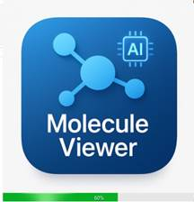启动成功后进入主界面：
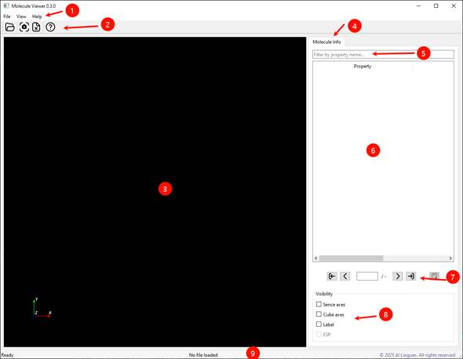4.2 主界面布局说明
- 1：程序菜单
- 2：工具栏（打开文件、导出图片、导出属性、帮助）
- 3：主窗口（3D 可视化、标签、坐标系统）
- 4：分子属性信息选项卡
- 5：属性过滤器
- 6：属性信息表
- 7：导航按钮
- 8：可见性参数
- 9：状态栏（操作信息、文件名、索引/数量、版权信息）
4.3 打开数据文件
通过菜单 File → Open 或快捷键 Ctrl+O 选择 SDF 文件。
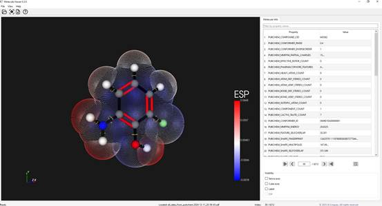4.4 工具栏功能
从左至右：打开文件、导出图片、导出属性、帮助
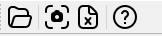4.5 主窗口展示
展现分子结构可视化、标签和坐标系统。
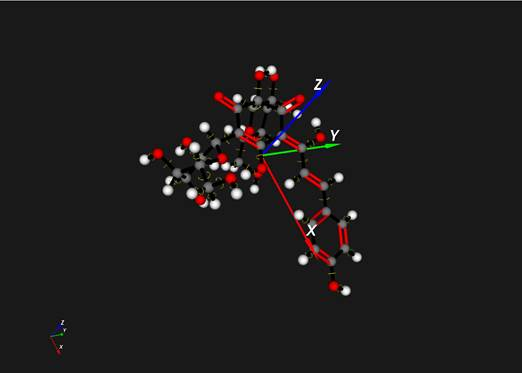4.6 属性分析
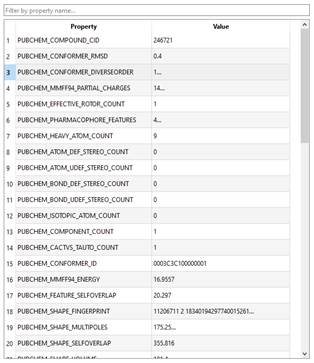支持属性悬停查看、双击复制、右键菜单功能。
 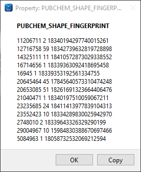
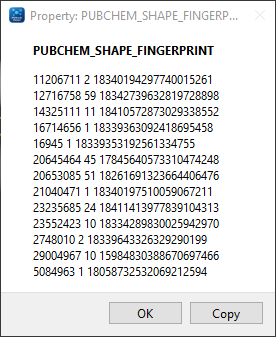

4.7 属性过滤器
通过输入关键字进行属性名称过滤。

4.8 分子导航
支持首个、上一个、跳转到指定、下一个、最后一个，支持索引输入跳转。

4.9 可见性控制
控制 Scene Axes（方向参考轴）和 Cube Axes（立方体坐标轴）的显示或隐藏。

4.10 图片导出
菜单路径：File → Export → To image，所见即所得。

支持 JPG、PNG、TIFF 格式。
也可直接使用工具栏按钮：

4.11 属性导出
菜单路径：File → Export → To xlsx，导出当前分子的全部属性。
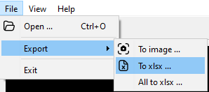支持的格式为 xlsx。
也可直接使用工具栏按钮：
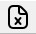注意：只导出 SDF 文件中的属性，计算属性不包含在内。
4.12 批量导出
菜单路径：File → Export → All to xlsx，导出全部分子数据。

4.13 全屏切换
菜单路径：View → Full screen，快捷键 F11

4.14 更新检查
支持自动与手动检查更新
程序启动过程中自动检查当前是否有新版本。
用户也可以在：Help → Check update这个菜单项手动检查更新。
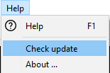
注意：当前程序迭代频繁，持续增加新特性，因此自动检查暂时不能关闭。
5. 最后说明
Molecule Viewer 知识产权归 AI Lingues 团队所有。
有任何问题或建议，欢迎联系：support@ailingues.com